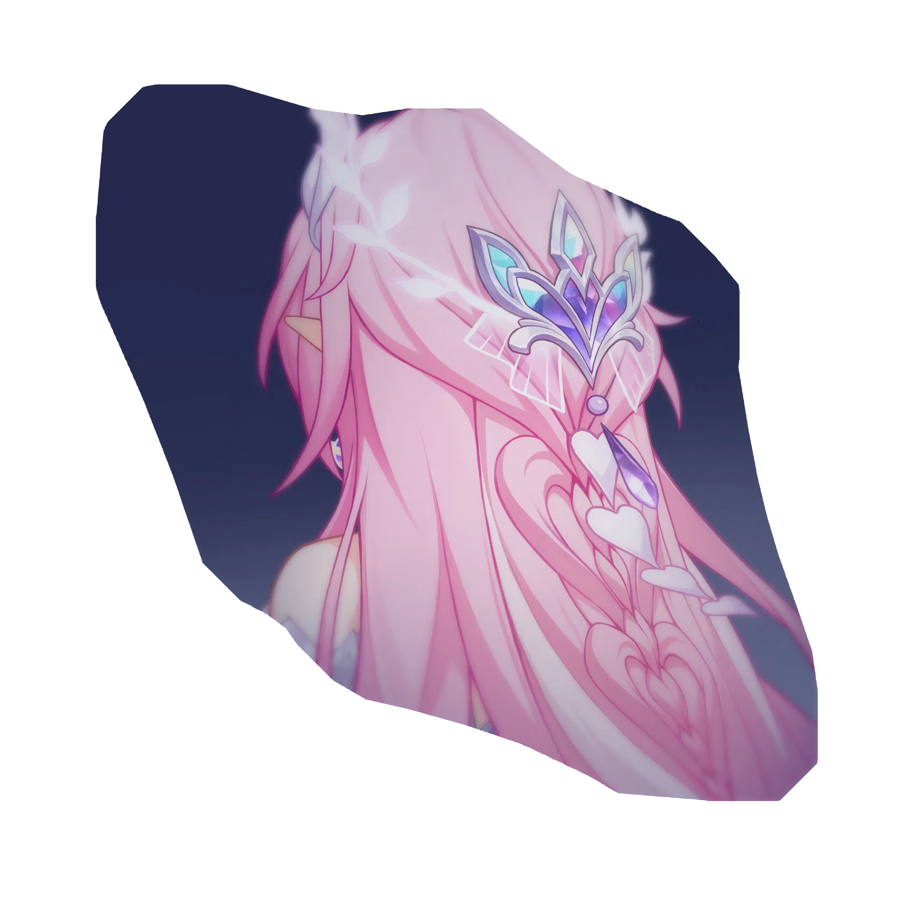
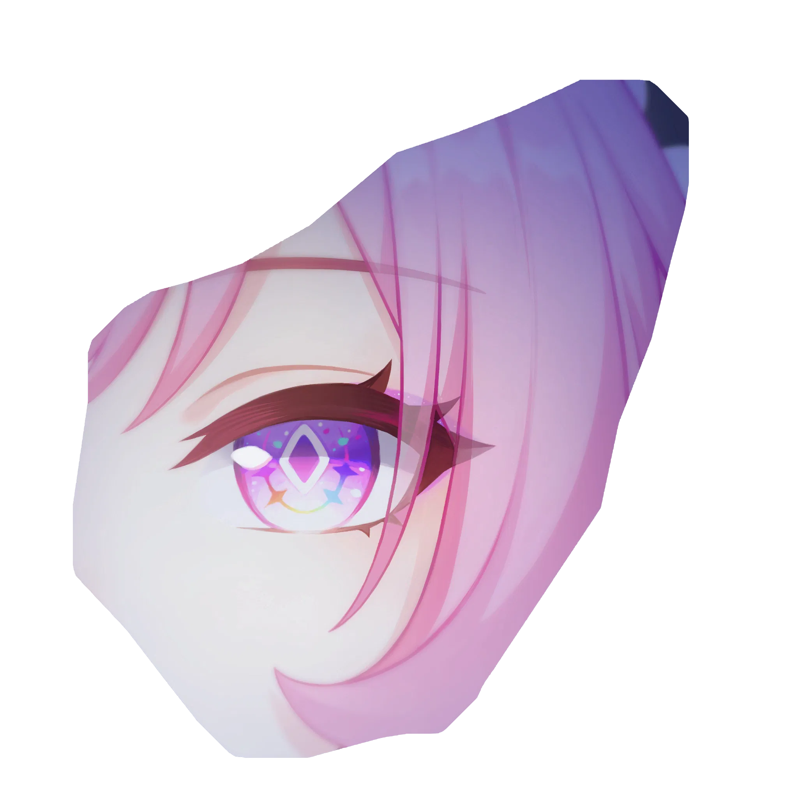
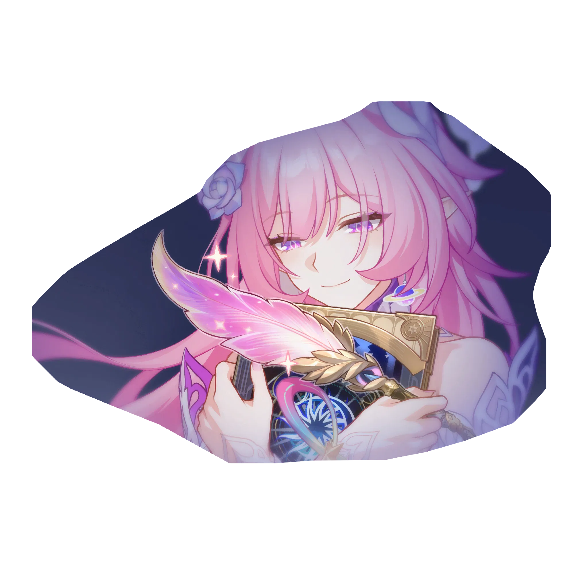
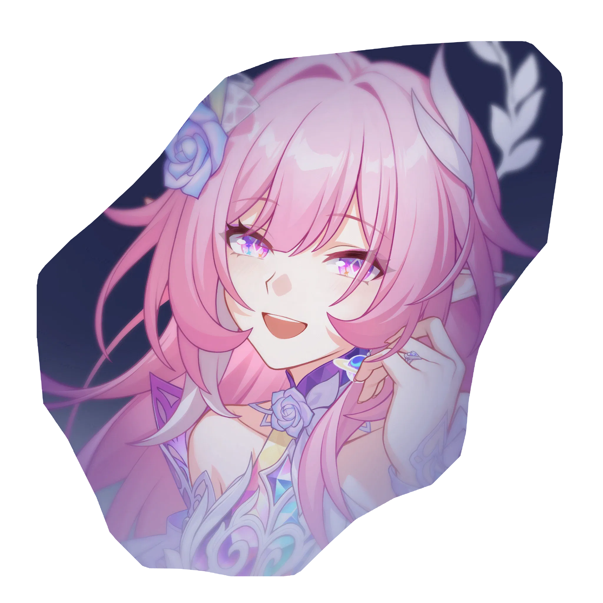
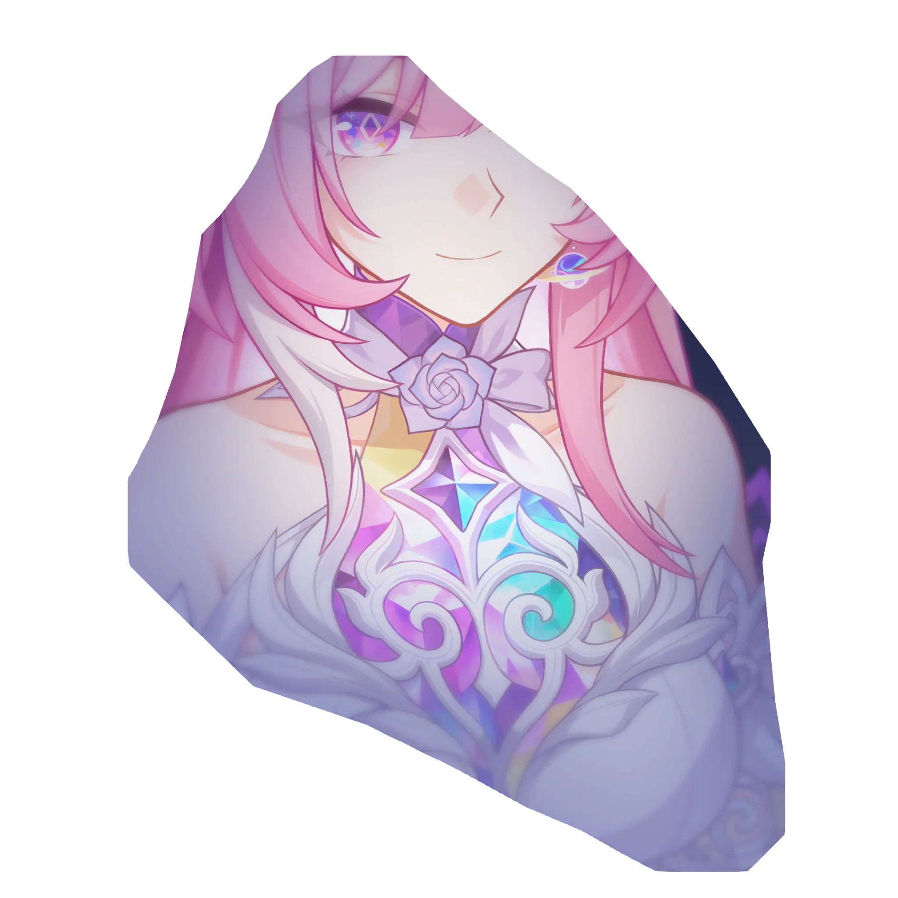
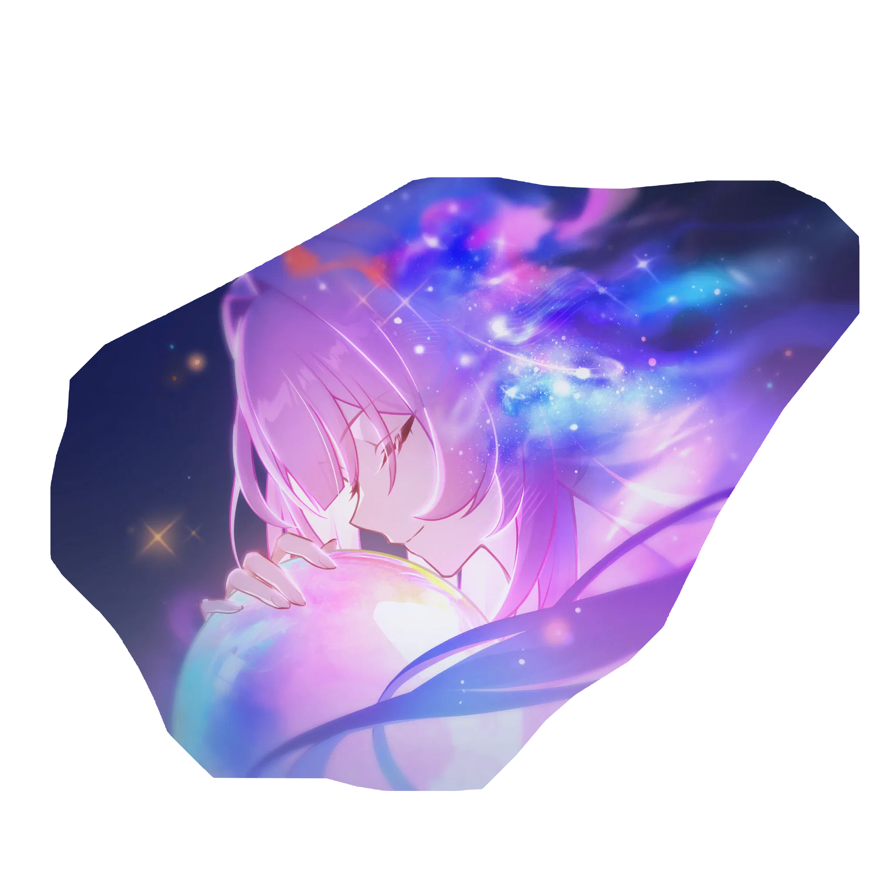

CHARACTER INFO
ABILITIES
BUILD
EIDOLONS
TEAM COMPS
EIDOLONS

EIDOLON 1
Epics, Born on a Blank Slate

EIDOLON 2
A Tomorrow in Thirteen Shades

EIDOLON 3
By Thy Being, As I've Written

EIDOLON 4
Please Write On, With a Smile

EIDOLON 5
Gaze, Steeped in Yesterbloom

EIDOLON 6
Remembrance, Sung in Ripples ♪
CLICK ANYWHERE TO CLOSE